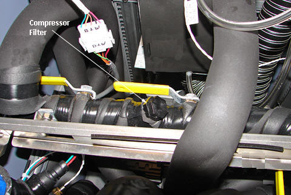
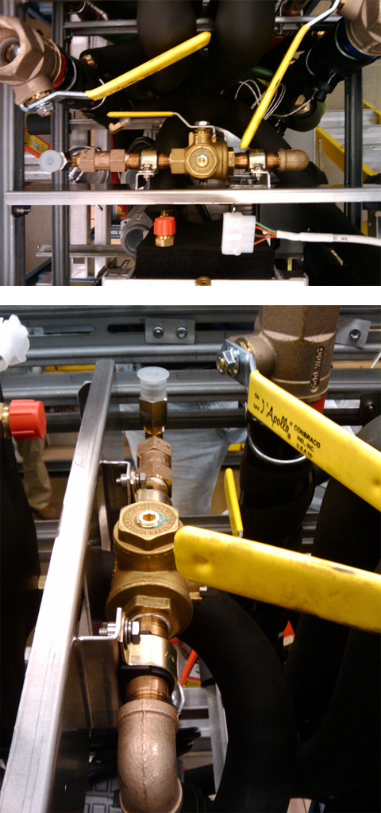
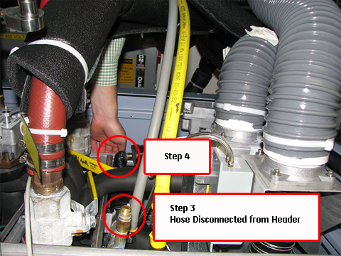
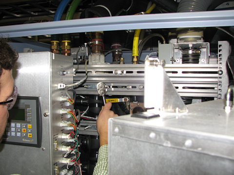
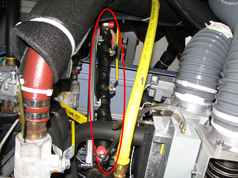

Operating Documentation
Direction 5670006, Rev# 1
Discovery MR750w GEM Service Methods
Module Version 3.0, Version Date 5/6/10
Operating Documentation |
| Required Persons | Preliminary Reqs | Procedure | Finalization |
|---|---|---|---|
| 1 | Not Applicable | 1 hour | 15 mins |
The Cryo Supply Header is a manifold located in the top portion of the Heat Exchanger Cabinet that routes facility-supplied coolant to the cryogen compressor and allows for filtering of the coolant. There are currently two configurations of this assembly in the product. The original style header contains a 150-micron plastic Y-filter that is removable with a hex head cap and can be seen in Illustration 1. The newer version of the supply header is simplified with a 150-micron basket filter and can be seen in Illustration 2. This procedure outlines replacement of both the old and new style designs with the new style header.
Illustration 1: Original Cryo Supply Header

Illustration 2: Newer Style Cryo Supply Header (2 Views)

| Item | Qty | Effectivity | Part# | Manufacturer | |
|---|---|---|---|---|---|
| Adjustable Wrench | 2 | - | - | - | |
| Service Platform | 1 | - | - | - | |
| Coolant Draining Kit | 1 | - | - | - | |
| ||||
| PRESSURIZED LIQUID! | ||||
| THERE IS PRESSURIZED LIQUID INSIDE THE HEC CABINET WHEN ENERGIZED. | ||||
| REFER TO LOTO FOR HEAT EXCHANGER CABINET. |
| NOTE: | This section outlines removal for the old style header, but the process is the same for new style header. |
Perform LOTO for the Heat Exchanger Cabinet.
Drain the facility water from the cabinet per the Coolant Draining procedure.
Remove the gray hose from the front side of the header by loosening the swivel joint. (See Illustration 3.)
Illustration 3: Front Hose Removal

Remove the insulation and hose from the back side of the header by loosening the swivel joint.
Move the power box from the front of the cabinet out of the way by loosening the upper and lower screws that attach the box to the cabinet.
Loosen 4 bolts (2 in the front of the cabinet, 2 in the back) that secure the cryo supply header assembly to the cabinet rails. (See Illustration 4.)
Illustration 4: Removing Cryo Supply Header Screws

Remove cryo supply header from top of cabinet. (See Illustration 5.)
Illustration 5: Cryo Supply Header Removal

Orient the cryo supply header with the hex cap facing up and attach rear hose to cryo header. These should be finger tightened plus an additional quarter turn; with two wrenches, one for holding lower fitting in place and the other to tighten upper fitting.
Fasten new cryo supply header by securing 4 previously removed screws to the cabinet rails.
Attach previously removed front hose and secure firmly to prevent leaking. These should be finger tightened plus an additional quarter turn; with two wrenches, one for holding lower fitting in place and the other to tighten upper fitting.
Return the power box to its original location by securing two screws originally loosened securing it to the cabinet brackets.
Ensure all valves are open to allow coolant flow through facility plumbing of the HEC.
Check the fittings for leaks and retighten if necessary.
Confirm coolant flow to the cryo compressor on the PLC box.
Confirm that cryogen compressor flow is greater than or equal to 7 L/min (pressure is less than 6 bar at the facility inlet).